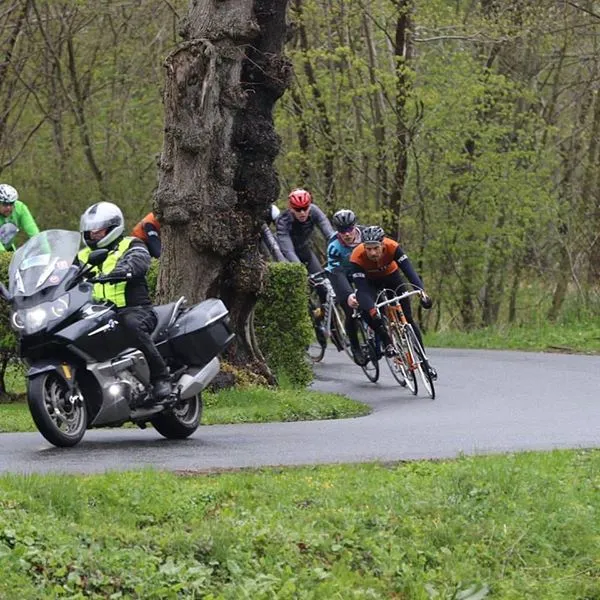
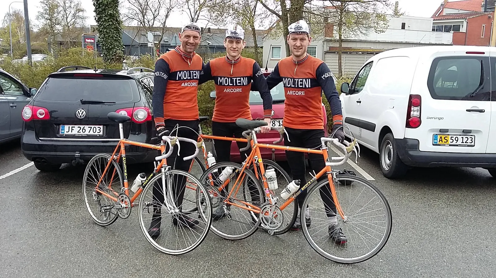

Nordfyn Rundt 2016: L’enfer du nord

Udsigten til Nordfyn Rundt 2016 var grå: Fyn lå gemt i grå og kold efterårsregn denne forårsmorgen. Men Squadra Molteni havde et udestående med Nordfyn Rundt.
Ankomst: Et minut og fyrre sekunder før start
To minutter før start stod Steffan og Niels og spejdede efter Kasper. Han var endnu ikke mødt frem. En fest, et vækkeur og noget … var undskyldningen, da han endelig kom frem et minut og fyrre sekunder før starten på Nordfyn Rundt 2016 gik.
Steffan nåede lige at smække chipklistermærket på hjelmen af Kasper – og så gik starten.

Det gik for fulde gardiner, og Squadra Molteni måtte kæmpe lidt for at lukke hullet op til forreste del af feltet. Kaptajn Niels Bjørnsteen udnyttede dét momentum til at gå direkte forbi, og dermed i dagens første udbrud.
Det viste sig dog at være et rent tv-udbrud, da Niels vidste at der stod en fotograf kun 500 meter længere fremme. Samlet front gik det mod rutens eneste bjergpas – Båring Bakke.
Mudder, kolort og vand
Underlaget bestod for det meste af lige dele hullet asfalt, mudder, kolort og vand. Vi var kommet til helvede i nord. Steffan var sit ansvar bevidst og viste stort lederskab og lokalkendskab, da han varskoede Niels og Kasper om at holde sig fremme inden feltet ramte Båring Bakke.
Squadra Molteni skovlede en ordentlig spand kul på, og satte sig i front på bakken, men på passets plateau knækker de Hvie Hvaler fra Kolding feltet, og skaber dagens afgørende udbrud.
Kasper kommer med som det tynde øl, desværre taber Steffan fem meter i svinget, og må se Kaspers baghjul sejle væk med den 7 mand store gruppe.
Steffan får følgeskab af Niels i feltet, hvor der bliver kørt taktisk, da Squadra Molteni nu har en mand placeret i front. Ingen andre havde ben til at lukke.
Kasper og de Hvie Hvaler
Udover Kasper består udbruddet af fire ryttere fra De Hvie Hvaler, en enkelt WeBike rytter og en ukendt temporytter på bagsmækken. Der bliver holdt et jævnt tempo, ingen har lyst til at udfordre De Hvie Hvaler, der synes stærkest.
I en typisk nordfynsk by, bestående af en kalkhvid kirke og en præstegård, trækker Kasper ud til venstre for at ligge an til angreb, det overrasker gruppens motorcykel-marshal, der kun med nød og næppe undgår at nedlægge et par af kirkegårdens fem gravsten.
Finalen i Nordfyn Rundt 2016
I finalen laver Kasper en taktisk begynderfejl ved at forsøge at gå efter i det første angreb. Han bliver hægtet af gruppen 3 kilometer før mål, og må tage til takke med 7. pladsen. Ikke hvad Squadra Molteni havde håbet på – vi går altid efter sejren.

Udbryddet har to minutter ned til feltet, hvor Niels og Steffan sidder og bakker af. Da feltet rammer 7 kilometer-porten æder to Riwal-ryttere sig selv, og helt ude på spidsen saddelen, med to kilometer igen, rykker Steffan i venstre side for at forberede finalen for Niels. En veltimet krampe, gør at Niels kan rykke kontra og vinde feltets spurt om 8. pladsen.
Men hvor var Red Bull pigerne?
Sidste års 7. og 9. plads bliver dermed forbedret med mindst mulig margin i et rigtig beskidt løb. Heldigvis klarede vejret op, da holdbilen krydsene broen på returvejen til fastlandet, og herfra et solbeskinnet hovedkvarter i Vejle, kan vi meddele at vi næste år stiller op i en gummibåd med hjul.

Arrangørerne havde i år valgt at erstatte Red Bull pigerne med et par nordfynske kogekoner, der servere klarsuppe med melboller, men de var nu også rigtig søde. Dertil blev der serveret kold humle fra det lille lokale bryghus.